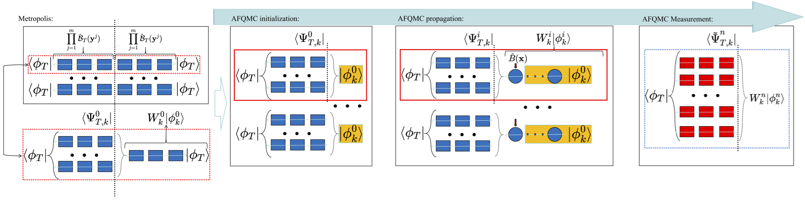
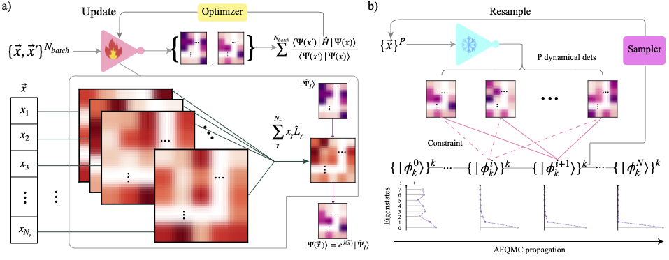
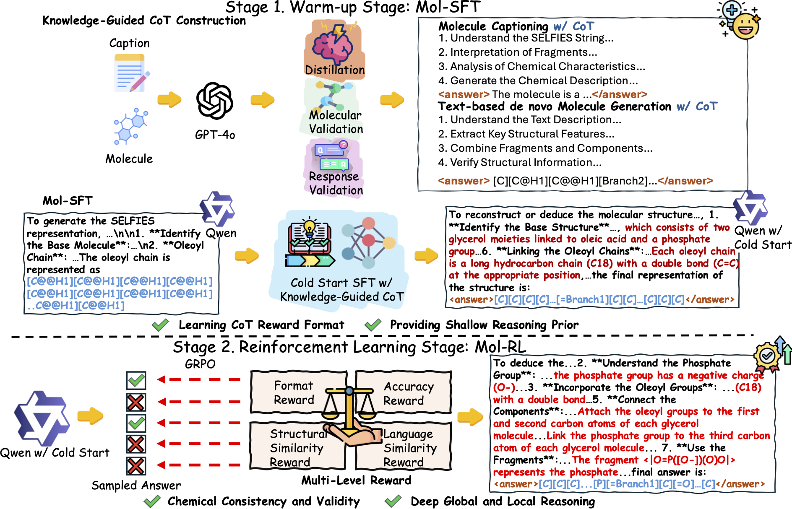
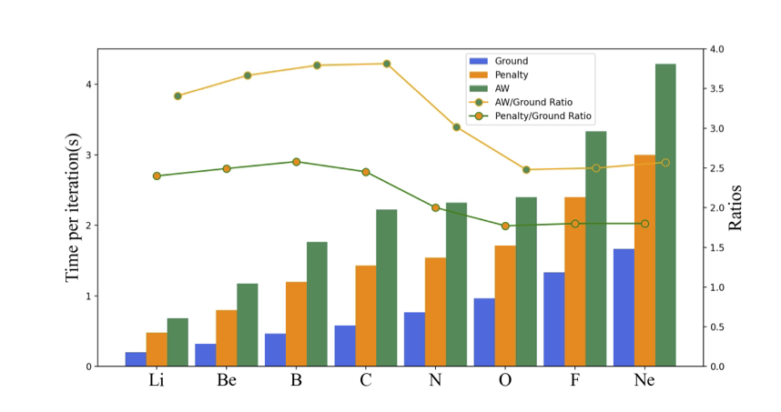

|
My ResearchMy overall goal is to develop scalable and trustworthy electronic-structure algorithms for realistic molecules and materials, with a focus on Quantum Monte Carlo methods. On one front, I develop variational Monte Carlo by building more expressive neural network ansätze and extending them to reliably target ground and excited states. In parallel, I work to more tightly bridge the gap between variational and projection QMC (especially AFQMC) to make fuller use of the high-quality variational results. Recently, I also grew interested in promoting the physics and chemistry reasoning abilities of large language models (LLMs). I am applying for PhD programs for Fall 2026. If you are interested in my research and would like to discuss potential PhD positions, please feel free to reach out to me via email at lu104 [at] illinois [dot] edu. |
Selected Publications* denotes equal contribution. More information is available on my Google Scholar. |

|
Spin-symmetry-enforced solution of the many-body Schrödinger equation with deep neural network
Zhe Li*, Zixiang Lu*, Ruichen Li*, Xuelan Wen, Xiang Li, Liwei Wang, Ji Chen, Weiluo Ren Nature Computational Science [link] / [pdf] |
|  |
Implementation of correlated trial wavefunctions in AFQMC by stochastic sampling
Zhiyu Xiao, Zixiang Lu, Yixiao Chen, Tao Xiang, Shiwei Zhang Journal of Chemical Physics [link] / [pdf] |
|  |
Hybrid AFQMC: towards scalable and trustworthy quantum chemistry method
Zixiang Lu, Zhiyu Xiao, Shiwei Zhang Under review for JCTC [pdf] |
|  |
MolReasoner: Toward Effective and Interpretable Reasoning for Molecular LLMs
G Zhao*, Zixiang Lu*, S Li, Z Cheng, H Lin, L Wu, H Xia, H Cai, ... L Zhang, Z Gao Under review for ICLR 2026 [pdf] |
|  |
Penalty and auxiliary wave function methods for electronic Excitation in neural network variational quantum Monte Carlo
Zixiang Lu, Weizhong Fu Preprint [pdf] |
Education |
| 2024 - Present | |
| 2019 - 2024 |
Teaching |
|
Graduate teaching assistant for Physics 211 (University Physics: Mechanics) Fall 2024, 2025 |
|
Graduate teaching assistant for Physics 212 (University Physics: Elec & Mag) Spring 2025 |